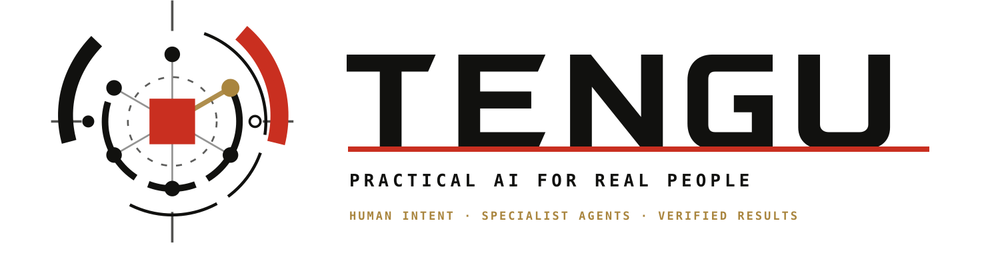

PARENT / EXECUTOR
goal · session_id · step_id
→ TENGU
TENGUA Rust harness: configuration → plan → agent processes → a checkable result.
config.toml → planner → executor

RagPlanner selects steps; DagExecutor runs those ready under depends_on.
The planner sees the configured roster: descriptions, skills and tools.
Illustrative workflow, not a recorded run.
SubprocessRunner starts tengu run-agent and exchanges JSON with it.
goal · session_id · step_id
→config.toml → model · skills · tools
→output · summary → next step
The parent sends the goal, dependency results and this session’s plan.
Tool allowlists + scopes. These checks apply on the guarded call path.
 Agent
AgentThe agent must be granted the tool. Asking in a prompt is not enough.
A sandbox configuration and a child process do not, by themselves, provide OS isolation.
First, retry with a delay. Then replan — if the budget allows.
Comparison failed. Review waits; source collection is already complete.
Attempts, replans and step duration are bounded. A successful process exit does not prove answer quality.
Studio links the plan, its steps and tool events in one recording.
The recording shows the DAG and selected agents.
Illustrative trace structure, not a recorded run or the model’s hidden reasoning.
Current results travel over IPC. Long-term memory is an optional connection.
Check what is still current
output / summary reach the next step over IPC, even without a database.
Memory is optional. If compress_and_store was not called, the final text can serve as a fallback.
Concrete dependencies, boundaries and events around your chosen models.
Parallelism reduces waiting between independent steps. It does not make a bad plan correct.


EPISODE 02 / CODE CHECKED 23 OCT 2026 / 9805470